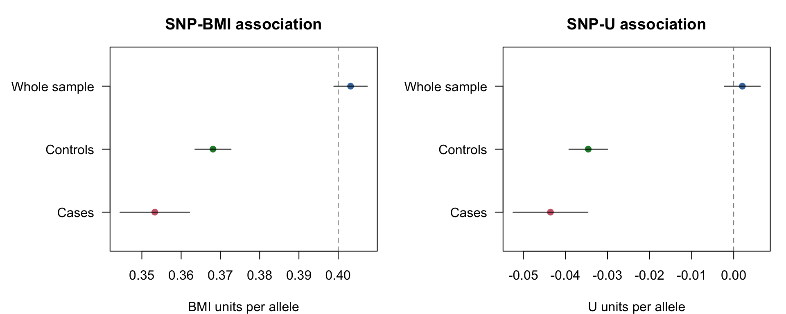
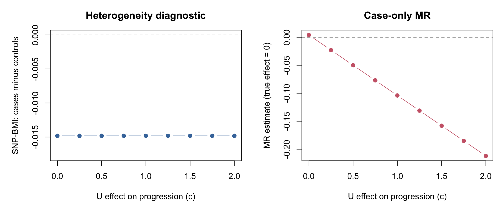
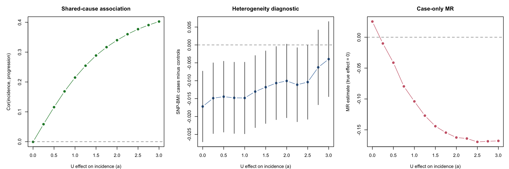

MR of disease progression is usually restricted to people who have developed the disease. If the exposure affects disease incidence, this restriction can induce associations between its genetic instruments and other causes of incidence. When those other causes also affect progression, the SNP-progression associations can be biased by index event bias (Dudbridge et al., 2019).
For example, consider BMI and mortality after colorectal cancer diagnosis. The relevant path is:
\[
G \rightarrow \mathrm{BMI} \rightarrow D \leftarrow U \rightarrow Y,
\]
where \(G\) is a BMI instrument, \(D\) is cancer incidence and \(U\) is a common cause of incidence and progression \(Y\). Conditioning on \(D=1\) can open this path even though \(G\) and \(U\) are independent in the population.
One proposed diagnostic is to compare SNP-BMI associations in cases, controls and the whole sample. Here we use a basic simulation to show the selection mechanism, its effect on MR, and what that diagnostic can and cannot establish.
A simple model with no BMI effect on progression
We simulate one SNP and an independent risk factor \(U\). BMI is measured before diagnosis. Both BMI and \(U\) increase disease incidence, but only \(U\) affects progression:
\[
\begin{aligned}
G &\sim \operatorname{Binomial}(2, 0.3), \qquad U \sim N(0,1), \\
X &= 0.4(G-0.6) + \epsilon_X, \\
\Pr(D=1 \mid X,U) &= \operatorname{expit}(-2 + X + U), \\
Y &= 0 \times X + U + \epsilon_Y.
\end{aligned}
\]
The two errors are independent standard normal variables, independent of \(G\) and \(U\). Thus the true BMI-progression effect is exactly zero, the population SNP-BMI coefficient is 0.4, and the SNP has no direct effect on incidence or progression.
We use a continuous progression score rather than a binary death outcome or survival time so that the MR ratio has a simple linear interpretation. This is a toy model with deliberately large effects to make the mechanism visible, not a calibrated model of colorectal cancer. We generate the score for everyone as a simulation benchmark; in an actual progression study it would only be observed or defined among cases. The whole sample is a population sample, not a case-control sample enriched for disease.
set.seed(20261007)n <-500000g <-rbinom(n, 2, 0.3)u <-rnorm(n)bmi <-0.4* (g -0.6) +rnorm(n)progression_error <-rnorm(n)progression <-0* bmi + u + progression_error# Reuse these draws below when changing the selection mechanism.selection_draw <-runif(n)case <- selection_draw <plogis(-2+ bmi + u)dat <-data.frame(g, u, bmi, progression, case)knitr::kable(data.frame(sample =c("Whole sample", "Controls", "Cases"),n =c(n, sum(!case), sum(case)) ),col.names =c("Sample", "N"))
Sample
N
Whole sample
500000
Controls
407012
Cases
92988
The simulated case fraction is 18.6%.
Compare SNP associations across samples
Estimate the association of the SNP with BMI, \(U\) and the progression score in each sample. The function below is just a univariable linear regression with an intercept.
plot_association <-function(beta, se, reference, title, xlab) { positions <-3:1 limits <-range(beta -1.96* se, beta +1.96* se, reference)plot( beta, positions, xlim = limits, ylim =c(0.5, 3.5),yaxt ="n", ylab ="", xlab = xlab, main = title,pch =19, col =c("#4477AA", "#228833", "#CC6677") )axis(2, at = positions, labels = associations$sample, las =1)abline(v = reference, lty =2, col ="grey50")segments(beta -1.96* se, positions, beta +1.96* se, positions)}par(mfrow =c(1, 2), mar =c(4, 7, 3, 1))plot_association( associations$beta_gx, associations$se_gx, 0.4,"SNP-BMI association", "BMI units per allele")plot_association( associations$beta_gu, associations$se_gu, 0,"SNP-U association", "U units per allele")

Figure 1: SNP associations and approximate 95% confidence intervals. Dashed lines show the population coefficients specified in the simulation.
In the whole sample, \(G\) and \(U\) are approximately independent and the SNP-BMI coefficient is close to 0.4. Among cases, the SNP becomes negatively associated with \(U\): people with more genetically influenced BMI need less contribution from \(U\) to become cases in this model. Since \(U\) increases progression, an apparent protective SNP-progression association appears.
The SNP-BMI association is also attenuated among cases. Conditioning on disease status changes the relationship between \(G\) and the other component of BMI, \(\epsilon_X\). This happens despite the structural genetic effect on BMI remaining 0.4 for every individual. Controls are selected on \(D=0\) and can also show altered associations.
Diagnostic: is the SNP-BMI association different in cases and controls?
The diagnostic directly tests the null hypothesis that the SNP-BMI coefficients are equal in cases and controls:
Cases and controls are disjoint strata, so we use the sum of their slope variances for an approximate test of their difference. The whole sample overlaps both strata and is not an independent third comparison.
The estimated SNP-BMI coefficient is 0.353 in cases and 0.368 in controls. The case-control difference is -0.0148 (P = 0.00371), providing evidence of heterogeneity in this simulated sample. This difference arises from selection even though the structural SNP effect on BMI is 0.4 in every individual.
What happens to the MR estimate?
With one instrument, the MR estimate is the Wald ratio:
Compare the population benchmark with two versions of case-only MR: one using the population SNP-BMI estimate and one estimating both associations among cases. The former illustrates the selection problem in two-sample MR, although here the samples overlap for simplicity.
The population benchmark is close to zero. The case-only estimate is -0.104 using the population SNP-BMI coefficient and -0.119 using the case coefficient. Both suggest a protective BMI effect even though BMI has no effect on progression. Using the population SNP-BMI association does not remove the bias in the SNP-progression association. Re-estimating the denominator among cases does not restore instrument independence either.
Two simple checks on the mechanism
Keep the same underlying individuals and random draws, but remove one arrow at a time:
Remove BMI \(\rightarrow\) incidence. Selection then depends only on \(U\), so it does not induce an association between \(G\) and \(U\).
Remove \(U \rightarrow\) progression. Selection still changes SNP-BMI associations and induces a SNP-\(U\) association, but \(U\) no longer transmits that association to progression.
The true BMI-progression effect remains zero in every scenario. In the table, GX denotes the SNP-BMI coefficient and GU denotes the SNP-\(U\) coefficient.
scenarios <-data.frame(scenario =c("Both arrows present", "No BMI -> incidence", "No U -> progression"),bmi_incidence =c(1, 0, 1),u_progression =c(1, 1, 0))checks <-do.call(rbind, lapply(seq_len(nrow(scenarios)), function(i) { selected <- selection_draw <plogis(-2+ scenarios$bmi_incidence[i] * bmi + u) y <- scenarios$u_progression[i] * u + progression_error gx_cases <-association(bmi[selected], g[selected])["beta"] gx_controls <-association(bmi[!selected], g[!selected])["beta"] gu_cases <-association(u[selected], g[selected])["beta"] gy_cases <-association(y[selected], g[selected])["beta"]data.frame(scenario = scenarios$scenario[i],bmi_difference =unname(gx_cases - gx_controls),gu_cases =unname(gu_cases),mr_population_gx =unname(gy_cases / population$beta_gx),mr_cases_gx =unname(gy_cases / gx_cases) )}))knitr::kable( checks, digits =4,col.names =c("Scenario", "GX: cases minus controls", "GU: cases","MR: population GX", "MR: case GX" ))
Scenario
GX: cases minus controls
GU: cases
MR: population GX
MR: case GX
Both arrows present
-0.0148
-0.0436
-0.1039
-0.1186
No BMI -> incidence
0.0052
0.0082
0.0097
0.0096
No U -> progression
-0.0148
-0.0436
0.0041
0.0047
Removing the BMI effect on incidence eliminates the systematic distortion, up to sampling variation. Removing the \(U\) effect on progression leaves SNP-BMI heterogeneity but eliminates the systematic MR bias. Thus heterogeneity alone does not establish that progression MR is biased.
Does heterogeneity track the strength of incidence-progression confounding?
There are two separate parameters governing the shared cause:
\[
\begin{aligned}
\Pr(D=1 \mid X,U) &= \operatorname{expit}(\alpha + X + aU), \\
Y &= cU + \epsilon_Y.
\end{aligned}
\]
Here \(a\) is the effect of \(U\) on incidence and \(c\) is its effect on progression. The true BMI-progression effect remains zero. The original example has \(a=c=1\). Strengthening either arrow can strengthen the association between incidence and progression through \(U\), but only \(a\) changes who becomes a case. We therefore vary the two parameters separately rather than treating their product as a universal measure of confounding.
Vary the effect of U on progression
Keep \(a=1\), the same BMI measurements and exactly the same cases and controls. Change \(c\) from 0 to 2. Nothing in the SNP-BMI diagnostic depends on the progression score, so its case-control difference must remain unchanged.
For these linear regressions, the SNP-progression coefficient obeys an exact identity within the selected sample:
par(mfrow =c(1, 2), mar =c(4, 5, 3, 1))plot( progression_sweep$u_progression, progression_sweep$gx_difference,type ="b", pch =19, col ="#4477AA",ylim =range(c(0, 1.2* progression_sweep$gx_difference)),xlab ="U effect on progression (c)",ylab ="SNP-BMI: cases minus controls", main ="Heterogeneity diagnostic")abline(h =0, lty =2, col ="grey50")plot( progression_sweep$u_progression, progression_sweep$mr,type ="b", pch =19, col ="#CC6677",xlab ="U effect on progression (c)",ylab ="MR estimate (true effect = 0)", main ="Case-only MR")abline(h =0, lty =2, col ="grey50")

Figure 2: Increasing the shared cause’s effect on progression changes the MR estimate but leaves SNP-BMI heterogeneity exactly unchanged. The same cases and controls are used at every point.
With \(c=0\) there is no common cause of incidence and progression, yet the SNP-BMI heterogeneity remains. Increasing \(c\) from 1 to 2 changes the MR estimate from -0.104 to -0.212, while the diagnostic difference stays at -0.0148. Thus it cannot measure the strength of incidence-progression confounding in general.
Vary the effect of U on incidence
Now fix \(c=1\) and vary \(a\) from 0 to 3. We adjust the incidence intercept at each value so that the expected disease prevalence remains equal to that in the original model. This avoids confounding changes in the selection mechanism with changes in the case fraction. The same underlying individuals, errors and uniform selection draws are reused.
We also calculate the population correlation between the simulated incidence indicator and progression score. With no BMI effect on progression and all starting variables independent, its systematic component is entirely due to their shared cause \(U\). It is a descriptive measure of the incidence-progression association in this particular model, not a general measure of confounding bias.
par(mfrow =c(1, 3), mar =c(4, 5, 3, 1))plot( incidence_sweep$u_incidence, incidence_sweep$incidence_progression_cor,type ="b", pch =19, col ="#228833",xlab ="U effect on incidence (a)",ylab ="Cor(incidence, progression)", main ="Shared-cause association")abline(h =0, lty =2, col ="grey50")lower <- incidence_sweep$gx_difference -1.96* incidence_sweep$difference_seupper <- incidence_sweep$gx_difference +1.96* incidence_sweep$difference_seplot( incidence_sweep$u_incidence, incidence_sweep$gx_difference,type ="b", pch =19, col ="#4477AA", ylim =range(lower, upper, 0),xlab ="U effect on incidence (a)",ylab ="SNP-BMI: cases minus controls", main ="Heterogeneity diagnostic")segments(incidence_sweep$u_incidence, lower, incidence_sweep$u_incidence, upper)abline(h =0, lty =2, col ="grey50")plot( incidence_sweep$u_incidence, incidence_sweep$mr,type ="b", pch =19, col ="#CC6677",xlab ="U effect on incidence (a)",ylab ="MR estimate (true effect = 0)", main ="Case-only MR")abline(h =0, lty =2, col ="grey50")

Figure 3: Varying the shared cause’s effect on incidence while holding its progression effect and expected disease prevalence fixed. The diagnostic panel includes approximate 95% confidence intervals. Points across settings are dependent because the same individuals and random draws are reused.
Here the incidence-progression association becomes stronger, while the SNP-BMI heterogeneity generally becomes smaller in magnitude over this parameter range. At \(a=0\) the diagnostic difference is -0.0172; at \(a=3\) it is -0.004. A strong additional cause of incidence can dilute selection on BMI in this model. The case-only MR estimate nevertheless becomes more biased because of the induced SNP-\(U\) association.
The two sweeps show why SNP-BMI heterogeneity is a warning about selection, rather than a calibrated measure of the confounding between incidence and progression or of MR bias. Changing the outcome-side confounding can leave it unchanged; changing the incidence-side confounding can alter it in a different direction from the MR bias.
Interpretation
This example establishes that selection on case status can induce a SNP-confounder association and produce a non-null MR estimate when the true progression effect is zero. In this model, that selection also produces heterogeneity in SNP-BMI associations.
Such heterogeneity is a useful warning signal. It does not specifically diagnose index event bias in real data, where disease-related effect modification, measurement differences and other selection processes may also explain it. Equally, failing to detect SNP-BMI heterogeneity does not establish instrument independence among cases or rule out bias in SNP-progression associations. The proposed check measures a different association from the one that directly carries the outcome bias.
This is one large simulated sample, not an assessment of power, false-positive rates or bias across realistic disease settings. The direction and size of bias depend on the incidence model and the effects of the shared causes. The SNP-BMI comparison is a diagnostic, not a correction method.